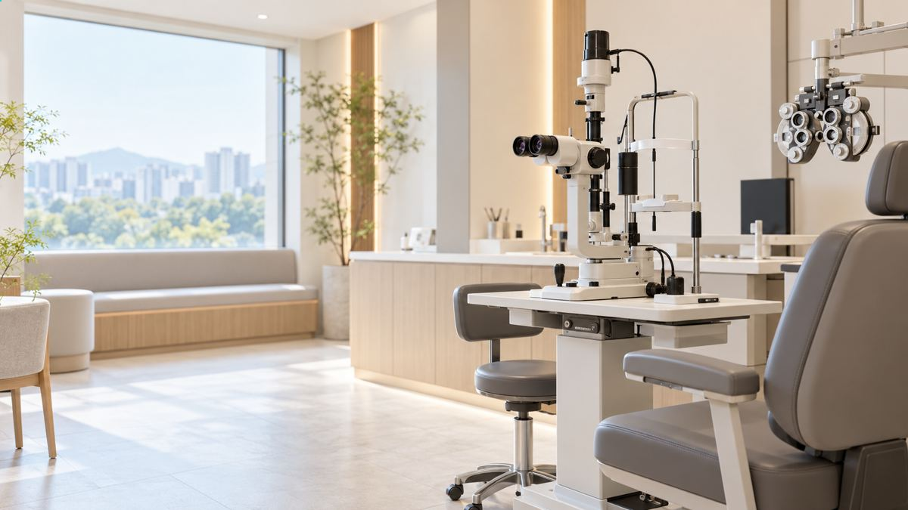
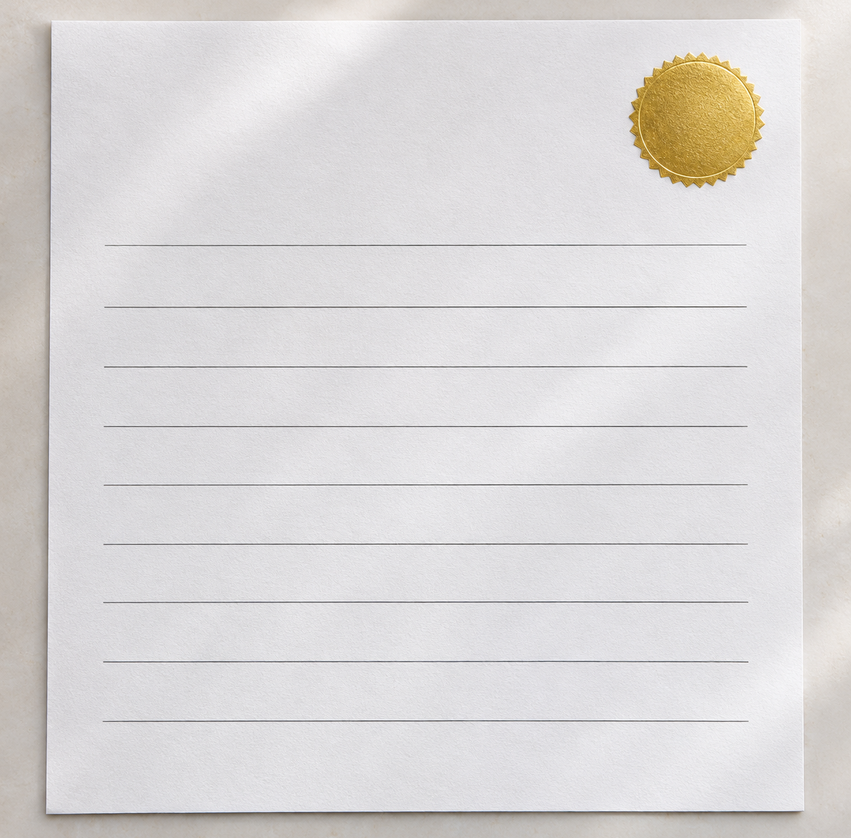

총평 : 스라하고 광명찾으세요
- 윤**
- 수술일 2025.11.24
리뷰 내용
- 교정전
- 교정후
드디어 스마일 수술을 받았어요. 글을 쓰는 지금은 수술 후 6개월쯤 됐어요.
저는 한 안과에서 수술 상담과 진료를 받았고
그 경험을 정리해 보려고 해요.
안경을 이십 년 가까이 써 온 제 생활을 먼저 돌아봤어요.
목욕탕에서 가족을 못 찾거나 수영장에서 강사를 구별하지 못할 때가 있었어요. 물놀이를 가도 안내판이 흐려 보여 이동하기 어려웠습니다. 등
시력이 나빠 안경과 렌즈 때문에 불편한 일이 많았어요.
병원을 알아보며 살핀 점
여러 정보를 살펴본 뒤 제가 가고 싶은 곳을 골랐어요.
수술을 고민하면서 여러 안과의 상담과 안내를 비교해 봤어요.
여러 곳의 상담 비용을 비교하면서 제가 미리 정한 예산 안에서 진행할 수 있는지 살폈습니다.
여러 곳을 알아보다가 이곳을 선택했어요.
연휴 행사를 한다는 소식을 보고 상담을 받아 봤어요.
먼저 상담을 신청해 궁금한 부분을 물었어요.
연휴 기간에 진행한 교정수술 비용 안내를 보고 상담을 신청했습니다.
수술 경험을 쓴 여러 병원의 후기를 찾아 읽어 보고 비교했어요.
블로그랑 시력교정 카페도 종종 봤는데
저도 병원 후기는 참고만 하고 다른 정보와 함께 살펴봤어요.
손으로는 여러 곳을 알아봤는데 발품은 여기 한 곳만 팔았어요. 쩔죠?
상담에서 확인한 내용
바로 수술을 정해 둔 건 아니라서 우선 상담부터 받아 봤어요.
상담 신청을 남긴 날 몇 시간 뒤에 연락을 받았어요. 가능한 날짜를 서로 확인하고 방문 일정을 잡았습니다.
되는 시간으로 예약하고 방문했어요.
통화로 상담한 뒤 필요한 내용을 메시지로 다시 받아 확인했어요.
저는 작은 절개 방식으로 받고 싶은 마음이 정해져 있었어요. 검사를 통해 그 방법이 가능한지를 먼저 확인했습니다.
검사에서 제 각막으로 해당 수술을 받을 수 있는지 확인했어요.
상담 때 산동제를 넣는 검사는 하지 않는다고 들었어요.
제 눈에는 그런 문제가 없을 거라 생각해 검사를 미뤘어요. 동공을 넓히는 검사 뒤에는 예정된 외출이 어려울 수도 있다고 들었습니다.
병원은 역에서 멀지 않아 지도보다 간판을 찾는 편이 쉬웠어요.
검사 장비마다 자리를 바꾸며 눈 상태를 측정했어요. 검사가 끝나면 결과를 가지고 진료실에서 설명을 듣습니다.
원장님 지정은 따로 안 해서 병원에서 정해 주신 분께 갔어요.
의료진에게 제 눈 상태를 확인받고 나서 수술을 결정했어요.
상담하면서 수술 날짜를 정했고 검사 결과도 책자에 적어 주셨어요.
난시가 있다는 점은 이전부터 알고 있었지만
동공이 큰 편이라 수술 뒤 빛 번짐이 좀 있을 거라고 했다 (ㅇㅋ..)
수술 당일의 일정

수술 전 안경을 쓰던 날을 떠올렸고
병원은 역에서 아주 가까워서
예약 시간에 맞춰 병원에 도착했어요.
- 중략 -
진행 중과 회복기에 지켜야 할 내용을 영상으로 확인했어요. 설명을 들은 다음 수술 동의서를 작성했습니다.
준비를 마치고 실내화로 갈아 신어 기다렸어요. 이후 담당자가 와서 마취 안약을 넣어 주었습니다.
마취 안약을 넣고 시간이 지난 뒤 수술복으로 갈아입고 안약을 한 번 더 넣었어요.
마지막 안약을 넣고 기다린 뒤 수술실로 들어갔어요.
안내에 맞춰 검사대에 누웠어요. 의료진이 자세와 시선 방향을 알려 주어 그 순서대로 따라갔습니다.
- 중략 -
수술을 마친 직후
- 중략 -
낮에 수술을 받고 그날 저녁부터 조금씩 편해지는 걸 느꼈어요.
저녁쯤 되니 눈 시림이 덜해져 휴대폰도 볼 수 있었어요.
4.수술 이후
한 달째에는 밤에 불빛이 퍼져 보여 운전이 부담스러웠고, 눈이 마르는 느낌도 조금 남아 있었어요.
수술 3개월 뒤에도 빛 번짐은 남아 있었지만 건조감은 많이 줄었어요.
반년이 지나면서 빛 퍼짐이 줄어 야간 운전도 할 만해졌어요. 다만 업무 중에는 건조함이 더 느껴졌습니다.
마지막으로
저는 수술 뒤 생활의 변화를 기대하고 있어요.
샤워 중 거울에 비친 제 얼굴도, 바닥에 떨어진 머리카락도 또렷해서 놀랐어요.
수영장에서도 선생님 얼굴을 알아볼 수 있었어요.
앞으로 일상에서 안경을 찾는 일이 줄었으면 해요.
안경과 렌즈에 들이던 수고가 덜어지길 바라요.
이 글은 제 개인 경험으로 남깁니다.

출처
- 교정전
- 교정후